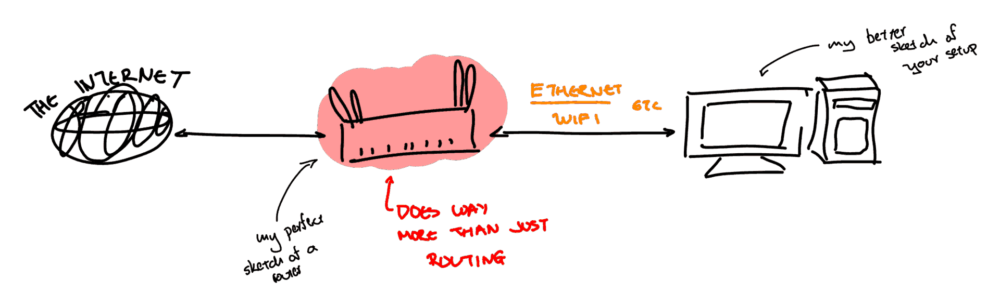

DNS Hardening on Manjaro: Ignore DHCP
A rabbit hole but who is to blame?
Table of Contents
Introduction
This article aims to show how easy it is to configure DNS on a Manjaro host so that you do not rely on the configuration the DHCP server shares with you. Having a proper DNS configuration is not something you do just to brag, but comes with serious security, privacy and performance considerations.
To help people understand, by blindly following your DHCP provider’s suggestions when it comes to DNS you risk:
- security: If they have a misconfigured / insecure dns server, DNS poisoning can occur at that level: You’re sure that you’ve visited your bank’s website, but in actuality, you are just visiting a malicious clone
- privacy: If a provider wants to track your internet activity, it is trivial to do so: They can see all websites that you’ve visited (without the need for extensive infrastructure - for plain MitM attacks)
- performance: Inadequate DNS servers have the potential to slow all your requests down
Disclaimer: Make sure to avoid copying the exact same configuration in case you (or your company) has a DNS server: Then you might lose access to certain endpoints and severely impact your workflow.
Only read if you have absolutely no idea what DNS is
If you’re reading this, then in all probability your network (at least your home one) looks like this:

Figure 1: Gloriously sketched home network
We have a device that we are quick to call a router but in actuality, it is much
more than that. It also functions as a :
- Wireless Access Point - Providing wireless access to our devices
- Ethernet (/ Layer 2) Switch - Providing LAN functionality
- Network Attached Storage (NAS) - Strangely, I’ve seen a lot of people attach a hard drive directly to the router when this functionality is supported
- and so much more, but crucially it also
- WORKS AS A
DHCPSERVER1
DHCP
This simplified model of the network focuses on IPv4. IPv6 introduced different ways of handling many of the underlying parts.
Now, what is a DHCP server you might ask… To understand that I’ll (grossly)
explain in a paragraph all of computer networking (-_-): I’m sure that you’ve
seen or heard quite a lot of times that computers have IP addresses. If you’ve
ever thought about it, I’m pretty sure that you reached the following
conclusion: they can’t be born with them2 since an address must always
point to you, no matter where you are (which network you are connected to). And
that is right! I’ll keep simplifying, but you can think of your
over-the-internet communications according to the following pattern:
- You somehow (that’s DNS) find the IP of the server/computer you want to talk to
- You create the message with that
Destination IP, and your address asSource IPbut not knowing where to send it to, you pass it to your router - Your router does its magic and forwards it to a path that will ultimately
reach
Destination IPand wait for its answer (they’ll send their reply to yourSource IP) - Your
Source IP, obviously needs to somehow be linked to your router (otherwise, how would the network know where to forward it to to reach you?)
A lot of interesting stuff might happen when it comes to generating your IP but,
let us ignore them. We’ve proven that it is necessary, and that it is related to
your router in one way or another. When it comes to home networks your IP is
leased by the DHCP server inside your router: When you connect, you ask for it,
and you receive one, for a given time. That’s it… almost.
There are many significant technologies that are hidden in this simplistic model (such as NAT), but these are not needed in this context.
You see DHCP servers are usually kinda nice and want to help you out. So,
instead of just handing out addresses, they also give you some extra addresses
such as these of:
- The
router - The
DNSservers
DNS
We took a long way to get here! DNS stands for Domain Name Service and it is
effectively a protocol for us to go from a Name to an Address.
-> nslookup google.com Server: 127.0.0.53 Address: 127.0.0.53#53 Non-authoritative answer: Name: google.com Address: 192.178.24.46 Name: google.com Address: 2a00:1450:4017:812::200e
The default DNS stack on Manjaro
By default Manjaro lets NetworkManager to handle practically everything around
networking, which includes DHCP and DNS configuration. Thus, systemd-resolved
might be installed but is disabled: we trust that the DHCP server promotes the
name servers we want. Have a look at /etc/resolv.conf (you don’t believers)
# Use this to verify that systemd-resolved is in fact disabled systemctl status systemd-resolved
# My hallucinated /etc/resolv.conf # This often is not an actual file, but a link to somewhere else in the system. search home.arpa nameserver 192.168.1.1 nameserver 8.8.8.8
It works (but we’ll break it)
The Goal
The rest of this article covers how we’ll:
- force
NetworkManagerto includeDNSservers advertised by the network and instead rely onsystemd-resolved - enable
systemd-resolved - configure
systemd-resolved(and add a couple of security features)
Before moving on, make sure that you understand what you’re doing. If in doubt, read some more.
NetworkManager let go of DNS pleeeeeeease
Simply enough, you’ll see that NetworkManager, following the standard convention
can be configured through: /etc/NetworkManager/conf.d/<files>
All we need, thus, is to edit (or create) dns.conf in that directory:
# /etc/NetworkManager/conf.d/dns.conf [main] # This tells NM to avoid passing information to systemd-resolved dns=none systemd-resolved=false
In this process we effectively redirect the /etc/resolv.conf file to
the stub created by systemd-resolved. The system then knows to look to
systemd-resolved, but without proper configuration, it receives information from NetworkManager
Configure systemd-resolved
In the same way, either through man 5 resolve.conf or by visiting
/etc/systemd/resolve.conf we’ll see that a standard configuration (minimal) is
suggested:
[Resolve] # Some examples of DNS servers which may be used for DNS= and FallbackDNS=: # Cloudflare: 1.1.1.1#cloudflare-dns.com 1.0.0.1#cloudflare-dns.com 2606:4700:4700::1111#cloudflare-dns.com 2606:4700:4700::1001#cloudflare-dns.com # Google: 8.8.8.8#dns.google 8.8.4.4#dns.google 2001:4860:4860::8888#dns.google 2001:4860:4860::8844#dns.google # Quad9: 9.9.9.9#dns.quad9.net 149.112.112.112#dns.quad9.net 2620:fe::fe#dns.quad9.net 2620:fe::9#dns.quad9.net # # Using DNS= configures global DNS servers and does not suppress link-specific # configuration. Parallel requests will be sent to per-link DNS servers # configured automatically by systemd-networkd.service(8), NetworkManager(8), or # similar management services, or configured manually via resolvectl(1). See # resolved.conf(5) and systemd-resolved(8) for more details.
Not only does it give us properly formatted entries to use for DNS, but it also
explains neatly, that if misconfigured, other services such as NetworkManager
may affect our active DNS configuration.
Visiting the suggested manpage explains the syntax in each of the Cloudflare,
Google and Quad9 lines:
# From man 5 resolved.conf
DNS=
A space-separated list of IPv4 and IPv6 addresses to use as system DNS servers. Each address can optionally take a port number
separated with ":", a network interface name or index separated with "%", and a Server Name Indication (SNI) separated with "#".
When IPv6 address is specified with a port number, then the address must be in the square brackets. That is, the acceptable full
formats are "111.222.333.444:9953%ifname#example.com" for IPv4 and "[1111:2222::3333]:9953%ifname#example.com" for IPv6. DNS
requests are sent to one of the listed DNS servers in parallel to suitable per-link DNS servers acquired from systemd-
networkd.service(8) or set at runtime by external applications. For compatibility reasons, if this setting is not specified, the
DNS servers listed in /etc/resolv.conf are used instead, if that file exists and any servers are configured in it. This setting
defaults to the empty list.
At this point, one could just copy any of these as the DNS= and a different one
as the FallbackDNS= and skip over to the part where we enable systemd-resolve,
however this article will not stop at that:
[Resolve] DNS=1.1.1.1#cloudflare-dns.com 1.0.0.1#cloudflare-dns.com 2606:4700:4700::1111#cloudflare-dns.com 2606:4700:4700::1001#cloudflare-dns.com FallbackDNS=9.9.9.9#dns.quad9.net 2620:fe::9#dns.quad9.net 1.1.1.1#cloudflare-dns.com 2606:4700:4700::1111#cloudflare-dns.com 8.8.8.8#dns.google 2001:4860:4860::8888#dns.google
Hardening
Why bother? Adding a couple of minutes to this configuration can make your browsing more secure and private, by enabling the following features
DNS over TLS: This encrypts yourDNS QueriesthroughTLSso that it is difficult for others to eavesdrop on your requests. In an ideal world, this setting would mean that only yourDNS Serverknows what you asked for: PrivacyDNSSEChandles security by providing integrity: its mechanisms make it difficult for anyone to give false information or tamper the responses: the response must come from the legitimate owners of that domain.
These are both easily added to one’s configuration
[Resolve] DNS=1.1.1.1#cloudflare-dns.com 1.0.0.1#cloudflare-dns.com 2606:4700:4700::1111#cloudflare-dns.com 2606:4700:4700::1001#cloudflare-dns.com FallbackDNS=9.9.9.9#dns.quad9.net 2620:fe::9#dns.quad9.net 1.1.1.1#cloudflare-dns.com 2606:4700:4700::1111#cloudflare-dns.com 8.8.8.8#dns.google 2001:4860:4860::8888#dns.google DNSSEC=yes DNSOverTLS=allow-downgrade ReadEtcHosts=yes Cache=yes
In this snippet I have DNSOverTLS=allow-downgrade , since it is notoriously easy
for DoT to fail. However, if you do not mind your connection breaking down, use DNSOverTLS=yes instead.
Enabling systemd-resolved
If you’ve followed so far, all you need to do is:
- enable the service
- make
NetworkManagerreload its configuration so that it does not handleDNS
sudo systemctl enable --now systemd-resolved sudo systemctl restart NetworkManager
Verifying the installation
This article would not be complete, if it did not include the following tests, allowing us to verify that we did in fact configure the system properly:
# These tests are within resolvectl resolvectl status # look for DNSOverTLS, DNSSEC
resolvectl statistics
You can also verify DNSSEC against this domain (it should fail):
resolvectl query sigfail.verteiltesysteme.net
Finally you can have a look at NetworkManager DNS -related settings using:
nmcli connection show $yourconnection | grep dns
A couple of notes on resolvectl status
- If you see that
resolv.conf mode: foreignit usually means that somehow that file is not a link to the usualsystemd-resolved stub. You might wanna use:sudo ln -sf /run/systemd/resolve/stub-resolv.conf /etc/resolv.conf- Fixing that will show
resolv.conf mode: stub
If you see proper
Globaloptions, but your interface still using theDHCPprovided configuration: According to this, theNetworkManagerconfiguration should suffice. For me it required restarting: After restarting this resulted in me seeing an empty configuration for my interface, thus falling back on myGlobaloptionsLink 2 (enp2s0) Current Scopes: LLMNR/IPv4 LLMNR/IPv6 mDNS/IPv4 mDNS/IPv6 Protocols: -DefaultRoute +LLMNR +mDNS +DNSOverTLS DNSSEC=yes/supported Default Route: no
You might see too many breadcrumbs in ArchWiki and in multiple random posts,
pointing to the modification of /etc/systemd/networkd.conf (or sub-configuration
files) to have UseDNS=false. Just make sure that systemd-networkd is enabled
first (not by default) because otherwise, all actions will be futile.